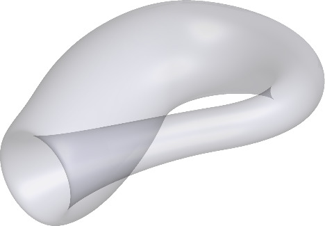
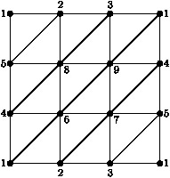
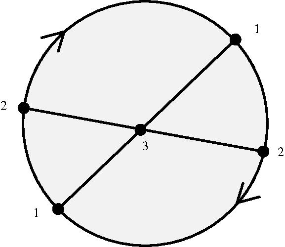
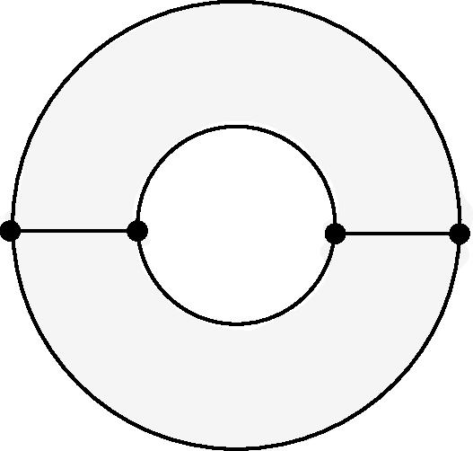
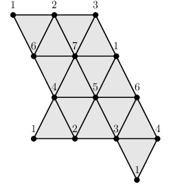
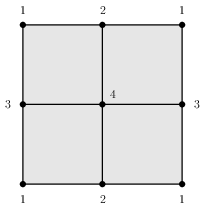
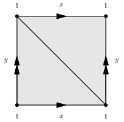
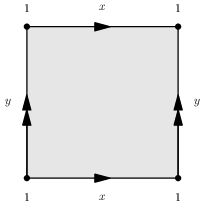

 
The following example constructs the Klein bottle as a simplicial complex \(K\) on \(9\) vertices, and then constructs the cellular chain complex \(C_\ast=C_\ast(K)\) from which the integral homology groups \(H_1(K,\mathbb Z)=\mathbb Z_2\oplus \mathbb Z\), \(H_2(K,\mathbb Z)=0\) are computed. The chain complex \(D_\ast=C_\ast \otimes_{\mathbb Z} \mathbb Z_2\) is also constructed and used to compute the mod-\(2\) homology vector spaces \(H_1(K,\mathbb Z_2)=\mathbb Z_2\oplus \mathbb Z_2\), \(H_2(K,\mathbb Z)=\mathbb Z_2\). Finally, a presentation \(\pi_1(K) = \langle x,y : yxy^{-1}x\rangle\) is computed for the fundamental group of \(K\).
gap> 2simplices:= > [[1,2,5], [2,5,8], [2,3,8], [3,8,9], [1,3,9], [1,4,9], > [4,5,8], [4,6,8], [6,8,9], [6,7,9], [4,7,9], [4,5,7], > [1,4,6], [1,2,6], [2,6,7], [2,3,7], [3,5,7], [1,3,5]];; gap> K:=SimplicialComplex(2simplices); Simplicial complex of dimension 2. gap> C:=ChainComplex(K); Chain complex of length 2 in characteristic 0 . gap> Homology(C,1); [ 2, 0 ] gap> Homology(C,2); [ ] gap> D:=TensorWithIntegersModP(C,2); Chain complex of length 2 in characteristic 2 . gap> Homology(D,1); 2 gap> Homology(D,2); 1 gap> G:=FundamentalGroup(K); <fp group of size infinity on the generators [ f1, f2 ]> gap> RelatorsOfFpGroup(G); [ f2*f1*f2^-1*f1 ]
The following example constructs the real projective plane \(P\), the Klein bottle \(K\) and the torus \(T\) as simplicial complexes, using the surface genus \(g\) as input in the oriented case and \(-g\) as input in the unoriented cases. It then confirms that the connected sums \(M=K\#P\) and \(N=T\#P\) have the same integral homology.
gap> P:=ClosedSurface(-1); Simplicial complex of dimension 2. gap> K:=ClosedSurface(-2); Simplicial complex of dimension 2. gap> T:=ClosedSurface(1); Simplicial complex of dimension 2. gap> M:=ConnectedSum(K,P); Simplicial complex of dimension 2. gap> N:=ConnectedSum(T,P); Simplicial complex of dimension 2. gap> Homology(M,0); [ 0 ] gap> Homology(N,0); [ 0 ] gap> Homology(M,1); [ 2, 0, 0 ] gap> Homology(N,1); [ 2, 0, 0 ] gap> Homology(M,2); [ ] gap> Homology(N,2); [ ]
Given a group \(G \) one can consider the partially ordered set \({\cal A}_p(G)\) of all non-trivial elementary abelian \(p\)-subgroups of \(G\), the partial order being set inclusion. The order complex \(\Delta{\cal A}_p(G)\) is a simplicial complex which is called the Quillen complex .
The following example constructs the Quillen complex \(\Delta{\cal A}_2(S_7)\) for the symmetric group of degree \(7\) and \(p=2\). This simplicial complex involves \(11291\) simplices, of which \(4410\) are \(2\)-simplices..
gap> K:=QuillenComplex(SymmetricGroup(7),2); Simplicial complex of dimension 2. gap> Size(K); 11291 gap> K!.nrSimplices(2); 4410
Any simplicial complex \(K\) can be regarded as a regular CW complex. Different datatypes are used in HAP for these two notions. The following continuation of the above Quillen complex example constructs a regular CW complex \(Y\) isomorphic to (i.e. with the same face lattice as) \(K=\Delta{\cal A}_2(S_7)\). An advantage to working in the category of CW complexes is that it may be possible to find a CW complex \(X\) homotopy equivalent to \(Y\) but with fewer cells than \(Y\). The cellular chain complex \(C_\ast(X)\) of such a CW complex \(X\) is computed by the following commands. From the number of free generators of \(C_\ast(X)\), which correspond to the cells of \(X\), we see that there is a single \(0\)-cell and \(160\) \(2\)-cells. Thus the Quillen complex $$\Delta{\cal A}_2(S_7) \simeq \bigvee_{1\le i\le 160} S^2$$ has the homotopy type of a wedge of \(160\) \(2\)-spheres. This homotopy equivalence is given in [Kso00, (15.1)] where it was obtained by purely theoretical methods.
gap> Y:=RegularCWComplex(K); Regular CW-complex of dimension 2 gap> C:=ChainComplex(Y); Chain complex of length 2 in characteristic 0 . gap> C!.dimension(0); 1 gap> C!.dimension(1); 0 gap> C!.dimension(2); 160
For any regular CW complex \(Y\) one can look for a sequence of simple homotopy collapses \(Y\searrow Y_1 \searrow Y_2 \searrow \ldots \searrow Y_N=X\) with \(X\) a smaller, and typically non-regular, CW complex. Such a sequence of collapses can be recorded using what is now known as a discrete vector field on \(Y\). The sequence can, for example, be used to produce a chain homotopy equivalence \(f\colon C_\ast Y \rightarrow C_\ast X\) and its chain homotopy inverse \(g\colon C_\ast X \rightarrow C_\ast Y\). The function ChainComplex(Y) returns the cellular chain complex \(C_\ast(X)\), wheras the function ChainComplexOfRegularCWComplex(Y) returns the chain complex \(C_\ast(Y)\).
For the above Quillen complex \(Y=\Delta{\cal A}_2(S_7)\) the following commands produce the chain homotopy equivalence \(f\colon C_\ast Y \rightarrow C_\ast X\) and \(g\colon C_\ast X \rightarrow C_\ast Y\). The number of generators of \(C_\ast Y\) equals the number of cells of \(Y\) in each degree, and this number is listed for each degree.
gap> K:=QuillenComplex(SymmetricGroup(7),2);; gap> Y:=RegularCWComplex(K);; gap> CY:=ChainComplexOfRegularCWComplex(Y); Chain complex of length 2 in characteristic 0 . gap> CX:=ChainComplex(Y); Chain complex of length 2 in characteristic 0 . gap> equiv:=ChainComplexEquivalenceOfRegularCWComplex(Y);; gap> f:=equiv[1]; Chain Map between complexes of length 2 . gap> g:=equiv[2]; Chain Map between complexes of length 2 . gap> CY!.dimension(0); 1316 gap> CY!.dimension(1); 5565 gap> CY!.dimension(2); 4410
For some purposes one might need to simplify the cell structure on a regular CW-complex \(Y\) so as to obtained a homeomorphic CW-complex \(W\) with fewer cells.
The following commands load a \(4\)-dimensional simplicial complex \(Y\) representing the K3 complex surface. Its simplicial structure is taken from [SK11] and involves \(1704\) cells of various dimensions. The commands then convert the cell structure into that of a homeomorphic regular CW-complex \(W\) involving \(774\) cells.
gap> Y:=RegularCWComplex(SimplicialK3Surface()); Regular CW-complex of dimension 4 gap> Size(Y); 1704 gap> W:=SimplifiedComplex(Y); Regular CW-complex of dimension 4 gap> Size(W); 774
The following commands construct the complement \(M=S^3\setminus K\) of the trefoil knot \(K\). This complement is returned as a \(3\)-manifold \(M\) with regular CW-structure involving four \(3\)-cells.
gap> arc:=ArcPresentation(PureCubicalKnot(3,1)); [ [ 2, 5 ], [ 1, 3 ], [ 2, 4 ], [ 3, 5 ], [ 1, 4 ] ] gap> S:=SphericalKnotComplement(arc); Regular CW-complex of dimension 3 gap> S!.nrCells(3); 4
The following additional commands then show that \(M\) is homotopy equivalent to a reduced CW-complex \(Y\) of dimension \(2\) involving one \(0\)-cell, two \(1\)-cells and one \(2\)-cell. The fundamental group of \(Y\) is computed and used to calculate the Alexander polynomial of the trefoil knot.
gap> Y:=ContractedComplex(S); Regular CW-complex of dimension 2 gap> CriticalCells(Y); [ [ 2, 1 ], [ 1, 9 ], [ 1, 11 ], [ 0, 22 ] ] gap> G:=FundamentalGroup(Y);; gap> AlexanderPolynomial(G); x_1^2-x_1+1

The following example creates the projective plane \(Y\) as a regular CW-complex, and tests that it has the correct integral homology \(H_0(Y,\mathbb Z)=\mathbb Z\), \(H_1(Y,\mathbb Z)=\mathbb Z_2\), \(H_2(Y,\mathbb Z)=0\).
gap> attch:=RegularCWComplex_AttachCellDestructive;; #Function for attaching cells gap> Y:=RegularCWDiscreteSpace(3); #Discrete CW-complex consisting of points {1,2,3} Regular CW-complex of dimension 0 gap> e1:=attch(Y,1,[1,2]);; #Attach 1-cell gap> e2:=attch(Y,1,[1,2]);; #Attach 1-cell gap> e3:=attch(Y,1,[1,3]);; #Attach 1-cell gap> e4:=attch(Y,1,[1,3]);; #Attach 1-cell gap> e5:=attch(Y,1,[2,3]);; #Attach 1-cell gap> e6:=attch(Y,1,[2,3]);; #Attach 1-cell gap> f1:=attch(Y,2,[e1,e3,e5]);; #Attach 2-cell gap> f2:=attch(Y,2,[e2,e4,e5]);; #Attach 2-cell gap> f3:=attch(Y,2,[e2,e3,e6]);; #Attach 2-cell gap> f4:=attch(Y,2,[e1,e4,e6]);; #Attach 2-cell gap> Homology(Y,0); [ 0 ] gap> Homology(Y,1); [ 2 ] gap> Homology(Y,2); [ ]`
The following example creates a 2-complex \(K\) corresponding to the group presentation
\(G=\langle x,y,z\ :\ xyx^{-1}y^{-1}=1, yzy^{-1}z^{-1}=1, zxz^{-1}x^{-1}=1\rangle\).
The complex is shown to have the correct fundamental group and homology (since it is the 2-skeleton of the 3-torus \(S^1\times S^1\times S^1\)).
gap> S1:=RegularCWSphere(1);; gap> W:=WedgeSum(S1,S1,S1);; gap> F:=FundamentalGroupWithPathReps(W);; x:=F.1;;y:=F.2;;z:=F.3;; gap> K:=RegularCWComplexWithAttachedRelatorCells(W,F,Comm(x,y),Comm(y,z),Comm(x,z)); Regular CW-complex of dimension 2 gap> G:=FundamentalGroup(K); <fp group on the generators [ f1, f2, f3 ]> gap> RelatorsOfFpGroup(G); [ f2^-1*f1*f2*f1^-1, f1^-1*f3*f1*f3^-1, f2^-1*f3*f2*f3^-1 ] gap> Homology(K,1); [ 0, 0, 0 ] gap> Homology(K,2); [ 0, 0, 0 ]

The following example creats a \(2\)-dimensional annulus \(A\) as a regular CW-complex, and testing that it has the correct integral homology \(H_0(A,\mathbb Z)=\mathbb Z\), \(H_1(A,\mathbb Z)=\mathbb Z\), \(H_2(A,\mathbb Z)=0\).
gap> FL:=[];; #The face lattice gap> FL[1]:=[[1,0],[1,0],[1,0],[1,0]];; gap> FL[2]:=[[2,1,2],[2,3,4],[2,1,4],[2,2,3],[2,1,4],[2,2,3]];; gap> FL[3]:=[[4,1,2,3,4],[4,1,2,5,6]];; gap> FL[4]:=[];; gap> A:=RegularCWComplex(FL); Regular CW-complex of dimension 2 gap> Homology(A,0); [ 0 ] gap> Homology(A,1); [ 0 ] gap> Homology(A,2); [ ]
Next we construct the direct product \(Y=A\times A\times A\times A\times A\) of five copies of the annulus. This is a \(10\)-dimensional CW complex involving \(248832\) cells. It will be homotopy equivalent \(Y\simeq X\) to a CW complex \(X\) involving fewer cells. The CW complex \(X\) may be non-regular. We compute the cochain complex \(D_\ast = {\rm Hom}_{\mathbb Z}(C_\ast(X),\mathbb Z)\) from which the cohomology groups
\(H^0(Y,\mathbb Z)=\mathbb Z\),
\(H^1(Y,\mathbb Z)=\mathbb Z^5\),
\(H^2(Y,\mathbb Z)=\mathbb Z^{10}\),
\(H^3(Y,\mathbb Z)=\mathbb Z^{10}\),
\(H^4(Y,\mathbb Z)=\mathbb Z^5\),
\(H^5(Y,\mathbb Z)=\mathbb Z\),
\(H^6(Y,\mathbb Z)=0\)
are obtained.
gap> Y:=DirectProduct(A,A,A,A,A); Regular CW-complex of dimension 10 gap> Size(Y); 248832 gap> C:=ChainComplex(Y); Chain complex of length 10 in characteristic 0 . gap> D:=HomToIntegers(C); Cochain complex of length 10 in characteristic 0 . gap> Cohomology(D,0); [ 0 ] gap> Cohomology(D,1); [ 0, 0, 0, 0, 0 ] gap> Cohomology(D,2); [ 0, 0, 0, 0, 0, 0, 0, 0, 0, 0 ] gap> Cohomology(D,3); [ 0, 0, 0, 0, 0, 0, 0, 0, 0, 0 ] gap> Cohomology(D,4); [ 0, 0, 0, 0, 0 ] gap> Cohomology(D,5); [ 0 ] gap> Cohomology(D,6); [ ]
Strategy 1: Use geometric group theory in low dimensions.
Continuing with the previous example, we consider the first and fifth generators \(g_1^1, g_5^1\in H^1(Y,\mathbb Z) =\mathbb Z^5\) and establish that their cup product \( g_1^1 \cup g_5^1 = - g_7^2 \in H^2(Y,\mathbb Z) =\mathbb Z^{10}\) is equal to minus the seventh generator of \(H^2(Y,\mathbb Z)\). We also verify that \(g_5^1\cup g_1^1 = - g_1^1 \cup g_5^1\).
gap> cup11:=CupProduct(FundamentalGroup(Y)); function( a, b ) ... end gap> cup11([1,0,0,0,0],[0,0,0,0,1]); [ 0, 0, 0, 0, 0, 0, -1, 0, 0, 0 ] gap> cup11([0,0,0,0,1],[1,0,0,0,0]); [ 0, 0, 0, 0, 0, 0, 1, 0, 0, 0 ]
This computation of low-dimensional cup products is achieved using group-theoretic methods to approximate the diagonal map \(\Delta \colon Y \rightarrow Y\times Y\) in dimensions \(\le 2\). In order to construct cup products in higher degrees HAP invokes two further strategies.
Strategy 2: implement the Alexander-Whitney map for a fixed class of spaces.
For simplicial complexes the cup product is implemented using the standard formula for the Alexander-Whitney chain map, together with homotopy equivalences to improve efficiency.
As a first example, the following commands construct simplicial surfaces \(K=(\mathbb S^1 \times \mathbb S^1) \# (\mathbb S^1 \times \mathbb S^1)\) and \(L=(\mathbb S^1 \times \mathbb S^1) \vee \mathbb S^1 \vee \mathbb S^1\) and establish that they have the same cohomology groups. It is then shown that the cup products \(\cup_K\colon H^1(K,\mathbb Z)\times H^1(K,\mathbb Z) \rightarrow H^2(K,\mathbb Z)\) and \(\cup_L\colon H^1(L,\mathbb Z)\times H^1(L,\mathbb Z) \rightarrow H^2(L,\mathbb Z)\) are antisymmetric bilinear forms of different ranks; hence \(K\) and \(L\) have different homotopy types.
gap> K:=ClosedSurface(2); Simplicial complex of dimension 2. gap> L:=WedgeSum(WedgeSum(ClosedSurface(1),Sphere(1)),Sphere(1)); Simplicial complex of dimension 2. gap> Cohomology(K,0);Cohomology(L,0); [ 0 ] [ 0 ] gap> Cohomology(K,1);Cohomology(L,1); [ 0, 0, 0, 0 ] [ 0, 0, 0, 0 ] gap> Cohomology(K,2);Cohomology(L,2); [ 0 ] [ 0 ] gap> gens:=[[1,0,0,0],[0,1,0,0],[0,0,1,0],[0,0,0,1]];; gap> cupK:=CupProduct(K);; gap> cupL:=CupProduct(L);; gap> A:=NullMat(4,4);;B:=NullMat(4,4);; gap> for i in [1..4] do > for j in [1..4] do > A[i][j]:=cupK(1,1,gens[i],gens[j])[1]; > B[i][j]:=cupL(1,1,gens[i],gens[j])[1]; > od;od; gap> Display(A); [ [ 0, 0, 0, 1 ], [ 0, 0, 1, 0 ], [ 0, -1, 0, 0 ], [ -1, 0, 0, 0 ] ] gap> Display(B); [ [ 0, 1, 0, 0 ], [ -1, 0, 0, 0 ], [ 0, 0, 0, 0 ], [ 0, 0, 0, 0 ] ] gap> Rank(A); 4 gap> Rank(B); 2
As a second example of the computation of cups products, the following commands construct the wedge sum \(W=M\vee N\) of a \(2\)-dimensional orientable simplicial surface of genus 2 and the \(K3\) complex surface which is stored as a pure simplicial complex of dimension 4. The simplicial structure on the \(K3\) surface is taken from [SK11]. The commands then show that \(H^2(W,\mathbb Z)=\mathbb Z^{22}\) and \(H^4(W,\mathbb Z)=\mathbb Z\). The final commands comput the matrix \((x\cup y)\) as \(x,y\) range over a generating set for \(H^2(W,\mathbb Z)\).
gap> M:=ClosedSurface(2);; gap> N:=SimplicialK3Surface();; gap> W:=WedgeSum(M,N); Simplicial complex of dimension 4. gap> Cohomology(W,0); [ 0 ] gap> Cohomology(W,1); [ 0, 0, 0, 0 ] gap> Cohomology(W,2); [ 0, 0, 0, 0, 0, 0, 0, 0, 0, 0, 0, 0, 0, 0, 0, 0, 0, 0, 0, 0, 0, 0, 0 ] gap> Cohomology(W,3); [ ] gap> Cohomology(W,4); [ 0 ] gap> cup:=CupProduct(W);; gap> SecondCohomologyGens:=IdentityMat(23);; gap> A:=NullMat(23,23);; gap> for i in [1..23] do > for j in [1..23] do > A[i][j]:=cup(2,2,SecondCohomologyGens[i],SecondCohomologyGens[j])[1]; > od;od; gap> Display(A); [ [ 0, 0, 0, 0, 0, 0, 0, 0, 0, 0, 0, 0, 0, 0, 0, 0, 0, 0, 0, 0, 0, 0, 0 ], [ 0, -2, 2, -1, 0, -1, 1, -1, 0, 0, 1, -1, 0, 0, 1, 1, 2, -1, -1, 1, -1, 0, -1 ], [ 0, 2, -4, 2, -1, 1, -1, 1, 0, -1, -1, 0, 1, -1, 1, -1, -2, 1, 2, -2, 1, 0, 3 ], [ 0, -1, 2, -2, 2, -1, 0, -1, 1, 1, 1, 0, 0, 0, -2, 0, 0, 0, 0, 1, 0, 1, -1 ], [ 0, 0, -1, 2, -4, 1, 1, 1, -2, -1, -1, 0, -1, -1, 4, 0, 1, -1, -1, -1, -1, -1, 1 ], [ 0, -1, 1, -1, 1, -2, 0, -1, 1, 0, 1, -1, 1, 0, 0, 1, 1, 0, 0, 1, 0, 1, 0 ], [ 0, 1, -1, 0, 1, 0, -2, 1, 0, 0, -1, 0, 1, 1, -1, 0, -1, 0, 0, 0, 1, 0, 0 ], [ 0, -1, 1, -1, 1, -1, 1, -2, 1, 0, 1, -1, 1, 0, 0, 1, 1, 0, 0, 1, 0, 0, 0 ], [ 0, 0, 0, 1, -2, 1, 0, 1, -2, -1, 0, 0, -1, -1, 2, 0, 0, -1, 0, -1, -1, -1, 0 ], [ 0, 0, -1, 1, -1, 0, 0, 0, -1, -2, 0, -1, 0, 0, 2, 1, 0, 0, 0, 0, 0, -1, 1 ], [ 0, 1, -1, 1, -1, 1, -1, 1, 0, 0, -2, 0, 1, 1, -1, 0, -1, 0, 0, 0, 1, -1, 0 ], [ 0, -1, 0, 0, 0, -1, 0, -1, 0, -1, 0, -2, 1, 0, 2, 1, 1, -1, 0, 0, 0, 0, 1 ], [ 0, 0, 1, 0, -1, 1, 1, 1, -1, 0, 1, 1, -2, 0, 0, 0, 0, 1, -1, 1, -1, -1, -2 ], [ 0, 0, -1, 0, -1, 0, 1, 0, -1, 0, 1, 0, 0, -2, 3, 0, 1, -1, 0, -1, -1, 0, 1 ], [ 0, 1, 1, -2, 4, 0, -1, 0, 2, 2, -1, 2, 0, 3, -8, -1, -2, 1, 1, 1, 2, 0, -2 ], [ 0, 1, -1, 0, 0, 1, 0, 1, 0, 1, 0, 1, 0, 0, -1, -2, -1, 1, 1, -1, 0, 0, 0 ], [ 0, 2, -2, 0, 1, 1, -1, 1, 0, 0, -1, 1, 0, 1, -2, -1, -2, 0, 2, -1, 1, 0, 0 ], [ 0, -1, 1, 0, -1, 0, 0, 0, -1, 0, 0, -1, 1, -1, 1, 1, 0, -2, -1, 0, 0, -1, 1 ], [ 0, -1, 2, 0, -1, 0, 0, 0, 0, 0, 0, 0, -1, 0, 1, 1, 2, -1, -2, 1, -1, 0, -2 ], [ 0, 1, -2, 1, -1, 1, 0, 1, -1, 0, 0, 0, 1, -1, 1, -1, -1, 0, 1, -2, 0, -1, 2 ], [ 0, -1, 1, 0, -1, 0, 1, 0, -1, 0, 1, 0, -1, -1, 2, 0, 1, 0, -1, 0, -2, 0, 0 ], [ 0, 0, 0, 1, -1, 1, 0, 0, -1, -1, -1, 0, -1, 0, 0, 0, 0, -1, 0, -1, 0, -2, 1 ], [ 0, -1, 3, -1, 1, 0, 0, 0, 0, 1, 0, 1, -2, 1, -2, 0, 0, 1, -2, 2, 0, 1, -4 ] ]
A cubical Alexander-Whitney formula can be used similarly for computing the cohomology ring of a regular CW-complex whose cells all have a cubical combinatorial face lattice.
Strategy 3: Guess and verify a cellular approximation to the diagonal map.
Many naturally occuring cell structures are neither simplicial nor cubical. For a general regular CW-complex we (currently) require a cellular inclusion \(\overline Y \hookrightarrow Y\times Y\) with \(\{(y,y)\ :\ y\in Y\}\subset \overline Y\) and with projection \(p\colon \overline Y \twoheadrightarrow Y\) that induces isomorphisms on integral homology. The function DiagonalApproximation(Y) constructs a candidate inclusion, but the projection \(p\colon \overline Y \twoheadrightarrow Y\) needs to be tested for homology equivalence. If the candidate inclusion passes this test then the function CupProduct(Y), involving the candidate space, can be used for cup products. (I think the test is passed for all regular CW-complexes that are subcomplexes of some Euclidean space with all cells convex polytopes -- but a proof needs to be written down!)
The following example calculates \(g_1^2 \cup g_2^2 \ne 0\) where \(Y=T\times T\) is the direct product of two copies of a simplicial torus \(T\), and where \(g_k^n\) denotes the \(k\)-th generator in some basis of \(H^n(Y,\mathbb Z)\). The direct product \(Y\) is a CW-complex which is not a simplicial complex.
gap> K:=RegularCWComplex(ClosedSurface(1));; gap> Y:=DirectProduct(K,K);; gap> cup:=CupProduct(Y);; gap> cup(2,2,[1,0,0,0,0,0],[0,1,0,0,0,0]); [ 5 ] gap> D:=DiagonalApproximation(Y);; gap> p:=D!.projection; Map of regular CW-complexes gap> P:=ChainMap(p); Chain Map between complexes of length 4 . gap> IsIsomorphismOfAbelianFpGroups(Homology(P,0)); true gap> IsIsomorphismOfAbelianFpGroups(Homology(P,2)); true gap> IsIsomorphismOfAbelianFpGroups(Homology(P,3)); true gap> IsIsomorphismOfAbelianFpGroups(Homology(P,4)); true
Of course, an alternative approach to this particular example would be to first give the direct product \(Y=T\times T\) the structure of a simplicial complex and then use the Alexander-Whitney map of Strategy 2. A simplicial structure for \(T\times T\) can be obtained using the function \(SCCartesianProduct(T,T)\) from the SimpComp package. The details are as follows. (The result is consistent with the preceding computation since the choice of a basis for cohomology groups is far from unique.)
gap> K:=ClosedSurface(1);; gap> facets:=MaximalSimplicesOfSimplicialComplex(K);; gap> LoadPackage("simpcomp");; gap> scK:=SCFromFacets(S);; gap> scY:=SCCartesianProduct(scK,scK);; gap> Y:=MaximalSimplicesToSimplicialComplex(SCFacetsEx(scY)); Simplicial complex of dimension 4. gap> cup:=CupProduct(Y);; gap> cup(2,2,[1,0,0,0,0,0],[0,1,0,0,0,0]); [ 0 ]
The cup product gives the cohomology \(H^\ast(X,R)\) of a space \(X\) with coefficients in a ring \(R\) the structure of a graded commutitive ring. This is currently implemented only for \(Y\) a simplicial complex and \(R=\mathbb Z_p\) the field of \(p\) elements.
The folowing commands compute the mod \(2\) cohomology ring \(H^\ast(W,\mathbb Z_2)\) of the above wedge sum \(W=M\vee N\) of a \(2\)-dimensional orientable simplicial surface of genus 2 and the \(K3\) complex simplicial surface (of real dimension 4).
gap> M:=ClosedSurface(2);; gap> N:=SimplicialK3Surface();; gap> W:=WedgeSum(M,N);; gap> A:=CohomologyRing(W,2); <algebra of dimension 29 over GF(2)> gap> x:=Basis(A)[25]; v.25 gap> y:=Basis(A)[27]; v.27 gap> x*y; v.29
The cup product gives rise to the intersection form of a connected, closed, orientable \(4\)-manifold \(Y\) is a symmetric bilinear form
\(qY\colon H^2(Y,\mathbb Z)/Torsion \times H^2(Y,\mathbb Z)/Torsion \longrightarrow \mathbb Z\)
which we represent as a symmetric matrix.
The following example constructs the direct product \(L=S^2\times S^2\) of two \(2\)-spheres, the connected sum \(M=\mathbb CP^2 \# \overline{\mathbb CP^2}\) of the complex projective plane \(\mathbb CP^2\) and its oppositely oriented version \(\overline{\mathbb CP^2}\), and the connected sum \(M=\mathbb CP^2 \# \mathbb CP^2\). The manifolds \(L\), \(M\) and \(N\) are each shown to have a CW-structure involving one \(0\)-cell, two \(1\)-cells and one \(2\)-cell. They are thus simply connected and have identical cohomology.
gap> S:=Sphere(2);; gap> S:=RegularCWComplex(S);; gap> L:=DirectProduct(S,S); Regular CW-complex of dimension 4 gap> M:=ConnectedSum(ComplexProjectiveSpace(2),ComplexProjectiveSpace(2),-1); Simplicial complex of dimension 4. gap> N:=ConnectedSum(ComplexProjectiveSpace(2),ComplexProjectiveSpace(2),+1); Simplicial complex of dimension 4. gap> CriticalCells(L); [ [ 4, 1 ], [ 2, 13 ], [ 2, 56 ], [ 0, 16 ] ] gap> CriticalCells(RegularCWComplex(M)); [ [ 4, 1 ], [ 2, 109 ], [ 2, 119 ], [ 0, 8 ] ] gap> CriticalCells(RegularCWComplex(N)); [ [ 4, 1 ], [ 2, 119 ], [ 2, 149 ], [ 0, 12 ] ]
John Milnor showed (as a corollary to a theorem of J. H. C. Whitehead) that the homotopy type of a simply connected 4-manifold is determined by its quadratic form. More precisely, a form is said to be of type I (properly primitive) if some diagonal entry of its matrix is odd. If every diagonal entry is even, then the form is of type II (improperly primitive). The index of a form is defined as the number of positive diagonal entries minus the number of negative ones, after the matrix has been diagonalized over the real numbers.
Theorem. (Milnor [Mil58]) The oriented homotopy type of a simply connected, closed, orientable 4-manifold is determined by its second Betti number and the index and type of its intersetion form; except possibly in the case of a manifold with definite quadratic form of rank r > 9.
The following commands compute matrices representing the intersection forms \(qL\), \(qM\), \(qN\).
gap> qL:=IntersectionForm(L);; gap> qM:=IntersectionForm(M);; gap> qN:=IntersectionForm(N);; gap> Display(qL); [ [ -2, 1 ], [ 1, 0 ] ] gap> Display(qM); [ [ 5, 2 ], [ 2, 1 ] ] gap> Display(qN); [ [ -3, -2 ], [ -2, -1 ] ]
Since \(qL\) is of type I, whereas \(qM\) and \(qN\) are of type II we see that the oriented homotopy type of \(L\) is distinct to that of \(M\) and that of \(N\). Since \(qM\) has index \(2\) and \(qN\) has index \(0\) we see that that \(M\) and \(N\) also have distinct oriented homotopy types.
A strictly cellular map \(f\colon X\rightarrow Y\) of regular CW-complexes is a cellular map for which the image of any cell is a cell (of possibly lower dimension). Inclusions of CW-subcomplexes, and projections from a direct product to a factor, are examples of such maps. Strictly cellular maps can be represented in HAP, and their induced homomorphisms on (co)homology and on fundamental groups can be computed.
The following example begins by visualizing the trefoil knot \(\kappa \in \mathbb R^3\). It then constructs a regular CW structure on the complement \(Y= D^3\setminus {\rm Nbhd}(\kappa) \) of a small tubular open neighbourhood of the knot lying inside a large closed ball \(D^3\). The boundary of this tubular neighbourhood is a \(2\)-dimensional CW-complex \(B\) homeomorphic to a torus \(\mathbb S^1\times \mathbb S^1\) with fundamental group \(\pi_1(B)=<a,b\, :\, aba^{-1}b^{-1}=1>\). The inclusion map \(f\colon B\hookrightarrow Y\) is constructed. Then a presentation \(\pi_1(Y)= <x,y\, |\, xy^{-1}x^{-1}yx^{-1}y^{-1}>\) and the induced homomorphism $$\pi_1(B)\rightarrow \pi_1(Y), a\mapsto y^{-1}xy^2xy^{-1}, b\mapsto y $$ are computed. This induced homomorphism is an example of a peripheral system and is known to contain sufficient information to characterize the knot up to ambient isotopy.
Finally, it is verified that the induced homology homomorphism \(H_2(B,\mathbb Z) \rightarrow H_2(Y,\mathbb Z)\) is an isomomorphism.
gap> K:=PureCubicalKnot(3,1);; gap> ViewPureCubicalKnot(K);;
gap> K:=PureCubicalKnot(3,1);; gap> f:=KnotComplementWithBoundary(ArcPresentation(K)); Map of regular CW-complexes gap> G:=FundamentalGroup(Target(f)); <fp group of size infinity on the generators [ f1, f2 ]> gap> RelatorsOfFpGroup(G); [ f1*f2^-1*f1^-1*f2*f1^-1*f2^-1 ] gap> F:=FundamentalGroup(f); [ f1, f2 ] -> [ f2^-1*f1*f2^2*f1*f2^-1, f1 ] gap> phi:=ChainMap(f); Chain Map between complexes of length 2 . gap> H:=Homology(phi,2); [ g1 ] -> [ g1 ]
The following example constructs a \(3\)-dimensional pure regular CW-complex \(K\) whose \(3\)-cells are permutahedra. It then constructs the simplicial complex \(B\) by taking barycentric subdivision. It then constructes a smaller, homotopy equivalent, simplicial complex \(N\) by taking the nerve of the cover of \(K\) by the closures of its \(3\)-cells.
gap> K:=RegularCWComplex(PureComplexComplement(PurePermutahedralKnot(3,1))); Regular CW-complex of dimension 3 gap> Size(K); 77923 gap> B:=BarycentricSubdivision(K); Simplicial complex of dimension 3. gap> Size(B); 1622517 gap> N:=Nerve(K); Simplicial complex of dimension 3. gap> Size(N); 48745
The above representations of spaces as simplicial complexes and regular CW complexes have their limitations. One limitation is that the number of cells needed to describe a space can be unnecessarily large. A minimal simplicial complex structure for the torus has \(7\) vertices, \(21\) edges and \(14\) triangles. A minimal regular CW-complex structure for the torus has \(4\) vertices, \(8\) edges and \(4\) cells of dimension \(2\). By using simplicial sets (which are like simplicial complexes except that they allow the freedom to attach simplicial cells by gluing their boundary non-homeomorphically) one obtains a minimal triangulation of the torus involving \(1\) vertex, \(3\) edges and \(2\) cells of dimension \(2\). By using non-regular CW-complexes one obtains a minimal cell structure involving \(1\) vertex, \(2\) edges and \(1\) cell of dimension \(2\). Minimal cell structures (in the four different categories) for the torus are illustrated as follows.
 
 
A second limitation to our representations of simplicial and regular CW-complexes is that they apply only to structures with finitely many cells. They do no apply, for instance, to the simplicial complex structure on the real line \(\mathbb R\) in which each each integer \(n\) is a vertex and each interval \([n,n+1]\) is an edge.
Simplicial sets provide one approach to the efficient combinatorial representation of certain spaces. So too do cubical sets (the analogues of simplicial sets in which each cell has the combinatorics of an \(n\)-cube rather than an \(n\)-simplex). Neither of these two approaches has been implemented in HAP.
Simplicial sets endowed with the action of a (possibly infinite) group \(G\) provide for an efficient representation of (possibly infinite) cell structures on a wider class of spaces. Such a structure can be made precise and is known as a simplicial group. Some functionality for simplicial groups is implemented in HAP and described in Chapter 12.
A regular CW-complex endowed with the action of a (possibly infinite) group \(G\) is an alternative approach to the efficient combinatorial representation of (possibly infinite) cell structures on spaces. Much of HAP is focused on this approach. As a first example of the idea, the following commands construct the infinite regular CW-complex \(Y=\widetilde T\) arising as the universal cover of the torus \(T=\mathbb S^1\times \mathbb S^1\) where \(T\) is given the above minimal non-regular CW structure involving \(1\) vertex, \(2\) edges, and \(1\) cell of dimension \(2\). The homology \(H_n(T,\mathbb Z)\) is computed and the fundamental group of the torus \(T\) is recovered.
gap> F:=FreeGroup(2);;x:=F.1;;y:=F.2;; gap> G:=F/[ x*y*x^-1*y^-1 ];; gap> Y:=EquivariantTwoComplex(G); Equivariant CW-complex of dimension 2 gap> C:=ChainComplexOfQuotient(Y); Chain complex of length 2 in characteristic 0 . gap> Homology(C,0); [ 0 ] gap> Homology(C,1); [ 0, 0 ] gap> Homology(C,2); [ 0 ] gap> FundamentalGroupOfQuotient(Y); <fp group of size infinity on the generators [ f1, f2 ]>
As a second example, the following comands load group number \(9\) in the library of \(3\)-dimensional crystallographic groups. They verify that \(G\) acts freely on \(\mathbb R^3\) (i.e. \(G\) is a Bieberbach group) and then construct a \(G\)-equivariant CW-complex \(Y=\mathbb R^3\) corresponding to the tessellation of \(\mathbb R^3\) by a fundamental domain for \(G\). Finally, the cohomology \(H_n(M,\mathbb Z)\) of the \(3\)-dimensional closed manifold \(M=\mathbb R^3/G\) is computed. The manifold \(M\) is seen to be non-orientable (since it's top-dimensional homology is trivial) and has a non-regular CW structure with \(1\) vertex, \(3\) edges, \(3\) cells of dimension \(2\), and \(1\) cell of dimension \(3\). (This example uses Polymake software.)
gap> G:=SpaceGroup(3,9);; gap> IsAlmostBieberbachGroup(Image(IsomorphismPcpGroup(G))); true gap> Y:=EquivariantEuclideanSpace(G,[0,0,0]); Equivariant CW-complex of dimension 3 gap> Y!.dimension(0); 1 gap> Y!.dimension(1); 3 gap> Y!.dimension(2); 3 gap> Y!.dimension(3); 1 gap> C:=ChainComplexOfQuotient(Y); Chain complex of length 3 in characteristic 0 . gap> Homology(C,0); [ 0 ] gap> Homology(C,1); [ 0, 0 ] gap> Homology(C,2); [ 2, 0 ] gap> Homology(C,3); [ ]
If a discrete group \(G\) acts on Euclidean space or hyperbolic space with finite stabilizer groups then we say that the quotient space obtained by killing the action of \(G\) an an orbifold. If the stabilizer groups are all trivial then the quotient is of course a manifold.
An orbifold is represented as a \(G\)-equivariant regular CW-complex together with the stabilizer group for a representative of each orbit of cells and its subgroup consisting of those group elements that preserve the cell orientation. HAP stores orbifolds using the data type of non-free resolution and uses them mainly as a first step in constructing free \(\mathbb ZG\)-resolutions of \(\mathbb Z\).
The following commands use an \(8\)-dimensional equivariant deformation retract of a \(GL_3(\mathbb Z[{\bf i}])\)-orbifold structure on hyperbolic space to compute \(H_5(GL_3({\mathbb Z}[{\bf i}],\mathbb Z) = \mathbb Z_2^5\oplus \mathbb Z_4^2\). (The deformation retract is stored in a library and was supplied by Mathieu Dutour Sikiric.)
gap> Orbifold:=ContractibleGcomplex("PGL(3,Z[i])"); Non-free resolution in characteristic 0 for matrix group . No contracting homotopy available. gap> R:=FreeGResolution(Orbifold,6); Resolution of length 5 in characteristic 0 for matrix group . No contracting homotopy available. gap> Homology(TensorWithIntegers(R),5); [ 2, 2, 2, 2, 2, 4, 4 ]
The next example computes an orbifold structure on \(\mathbb R^4\), and then the first \(12\) degrees of a free resolution/classifying space, for the second \(4\)-dimensional crystallographic group \(G\) in the library of crystallographic groups. The resolution is shown to be periodic of period \(2\) in degrees \(\ge 5\). The cohomology is seen to have \(11\) ring generators in degree \(2\) and no further ring generators. The cohomology groups are: $$H^n(G,\mathbb Z) =\left( \begin{array}{ll} 0, & {\rm odd~} n\ge 1\\ \mathbb Z_2^5 \oplus \mathbb Z^6, & n=2\\ \mathbb Z_2^{15}\oplus \mathbb Z, & n=4\\ \mathbb Z_2^{16}, & {\rm even~} n \ge 6 .\\ \end{array}\right.$$
gap> G:=SpaceGroup(4,2);; gap> R:=ResolutionCubicalCrystGroup(G,12); Resolution of length 12 in characteristic 0 for <matrix group with 5 generators> . gap> R!.dimension(5); 16 gap> R!.dimension(7); 16 gap> List([1..16],k->R!.boundary(5,k)=R!.boundary(7,k)); [ true, true, true, true, true, true, true, true, true, true, true, true, true, true, true, true ] gap> C:=HomToIntegers(R); Cochain complex of length 12 in characteristic 0 . gap> Cohomology(C,0); [ 0 ] gap> Cohomology(C,1); [ ] gap> Cohomology(C,2); [ 2, 2, 2, 2, 2, 0, 0, 0, 0, 0, 0 ] gap> Cohomology(C,3); [ ] gap> Cohomology(C,4); [ 2, 2, 2, 2, 2, 2, 2, 2, 2, 2, 2, 2, 2, 2, 2, 0 ] gap> Cohomology(C,5); [ ] gap> Cohomology(C,6); [ 2, 2, 2, 2, 2, 2, 2, 2, 2, 2, 2, 2, 2, 2, 2, 2 ] gap> Cohomology(C,7); [ ] gap> IntegralRingGenerators(R,1); [ ] gap> IntegralRingGenerators(R,2); [ [ 1, 0, 0, 0, 0, 0, 0, 0, 0, 0, 0 ], [ 0, 1, 0, 0, 0, 0, 0, 0, 0, 0, 0 ], [ 0, 0, 1, 0, 0, 0, 0, 0, 0, 0, 0 ], [ 0, 0, 0, 1, 0, 0, 0, 0, 0, 0, 0 ], [ 0, 0, 0, 0, 1, 0, 0, 0, 0, 0, 0 ], [ 0, 0, 0, 0, 0, 1, 0, 0, 0, 0, 0 ], [ 0, 0, 0, 0, 0, 0, 1, 0, 0, 0, 0 ], [ 0, 0, 0, 0, 0, 0, 0, 1, 0, 0, 0 ], [ 0, 0, 0, 0, 0, 0, 0, 0, 1, 0, 0 ], [ 0, 0, 0, 0, 0, 0, 0, 0, 0, 1, 0 ], [ 0, 0, 0, 0, 0, 0, 0, 0, 0, 0, 1 ] ] gap> IntegralRingGenerators(R,3); [ ] gap> IntegralRingGenerators(R,4); [ ] gap> IntegralRingGenerators(R,5); [ ] gap> IntegralRingGenerators(R,6); [ ] gap> IntegralRingGenerators(R,7); [ ] gap> IntegralRingGenerators(R,8); [ ] gap> IntegralRingGenerators(R,9); [ ] gap> IntegralRingGenerators(R,10); [ ]
A group \(G\) with a finite index torsion free nilpotent subgroup admits a resolution which is periodic in sufficiently high degrees if and only if all of its finite index subgroups admit periodic resolutions. The following commands identify the \(99\) \(3\)-dimensional space groups (respectively, the \(1191\) \(4\)-dimensional space groups) that admit a resolution which is periodic in degrees \(> 3\) (respectively, in degrees \(> 4\)).
gap> L3:=Filtered([1..219],k->IsPeriodicSpaceGroup(SpaceGroup(3,k))); [ 1, 2, 3, 4, 5, 6, 7, 8, 9, 11, 12, 13, 15, 17, 18, 19, 21, 24, 26, 27, 28, 29, 30, 31, 32, 33, 34, 36, 37, 39, 40, 41, 43, 45, 46, 52, 54, 55, 56, 58, 61, 62, 74, 75, 76, 77, 78, 79, 80, 81, 84, 85, 87, 89, 92, 98, 101, 102, 107, 111, 119, 140, 141, 142, 143, 144, 145, 146, 147, 148, 149, 150, 151, 152, 153, 154, 155, 157, 159, 161, 162, 163, 164, 165, 166, 168, 171, 172, 174, 175, 176, 178, 180, 186, 189, 192, 196, 198, 209 ] gap> L4:=Filtered([1..4783],k->IsPeriodicSpaceGroup(SpaceGroup(4,k))); [ 1, 2, 3, 4, 5, 6, 7, 8, 9, 11, 12, 13, 15, 16, 17, 18, 19, 20, 22, 23, 25, 26, 29, 30, 31, 32, 33, 34, 35, 36, 37, 38, 39, 40, 42, 43, 44, 46, 47, 48, 49, 50, 51, 52, 53, 54, 55, 56, 58, 59, 60, 61, 62, 63, 65, 66, 68, 69, 70, 71, 73, 74, 75, 76, 77, 78, 79, 80, 81, 82, 83, 84, 85, 86, 87, 89, 90, 91, 93, 94, 95, 96, 97, 98, 99, 101, 102, 103, 104, 105, 107, 108, 109, 110, 111, 113, 115, 116, 118, 119, 120, 121, 122, 124, 126, 127, 128, 130, 131, 134, 141, 144, 145, 149, 151, 153, 154, 155, 156, 157, 158, 159, 160, 162, 163, 165, 167, 168, 169, 170, 171, 172, 173, 174, 176, 178, 179, 180, 187, 188, 197, 198, 202, 204, 205, 206, 211, 212, 219, 220, 222, 226, 233, 237, 238, 239, 240, 241, 242, 243, 244, 245, 247, 248, 249, 250, 251, 253, 254, 255, 256, 257, 259, 260, 261, 263, 264, 265, 266, 267, 269, 270, 271, 273, 275, 277, 278, 279, 281, 283, 285, 290, 292, 296, 297, 298, 299, 300, 301, 303, 304, 305, 314, 316, 317, 319, 327, 328, 329, 333, 335, 342, 355, 357, 358, 359, 361, 362, 363, 365, 366, 367, 368, 369, 370, 372, 374, 376, 378, 381, 384, 385, 386, 387, 388, 389, 390, 391, 392, 393, 394, 395, 396, 397, 398, 399, 400, 401, 402, 404, 405, 406, 407, 408, 409, 410, 411, 412, 413, 414, 415, 416, 417, 418, 419, 421, 422, 423, 424, 425, 426, 427, 428, 429, 430, 431, 432, 433, 434, 435, 436, 437, 438, 439, 440, 442, 443, 444, 445, 446, 447, 448, 450, 451, 458, 459, 462, 464, 465, 466, 467, 469, 470, 473, 477, 478, 479, 482, 483, 484, 485, 486, 493, 495, 497, 501, 502, 503, 504, 505, 507, 508, 512, 514, 515, 516, 517, 522, 524, 525, 526, 527, 533, 537, 539, 540, 541, 542, 543, 544, 546, 548, 553, 555, 558, 562, 564, 565, 566, 567, 568, 571, 572, 573, 574, 576, 577, 580, 581, 582, 589, 590, 591, 593, 596, 598, 599, 612, 613, 622, 623, 624, 626, 632, 641, 647, 649, 651, 652, 654, 656, 657, 658, 659, 661, 662, 663, 665, 666, 667, 668, 669, 670, 671, 672, 674, 676, 677, 678, 679, 680, 682, 683, 684, 686, 688, 689, 690, 691, 692, 694, 696, 697, 698, 699, 700, 702, 708, 710, 712, 714, 716, 720, 722, 728, 734, 738, 739, 741, 742, 744, 745, 752, 754, 756, 757, 758, 762, 763, 769, 770, 778, 779, 784, 788, 790, 800, 801, 843, 845, 854, 855, 856, 857, 865, 874, 900, 904, 909, 911, 913, 915, 916, 917, 919, 920, 921, 922, 923, 924, 925, 926, 927, 929, 931, 932, 933, 934, 936, 938, 940, 941, 943, 945, 946, 953, 955, 956, 958, 963, 966, 972, 973, 978, 979, 981, 982, 983, 985, 987, 988, 989, 991, 992, 993, 995, 996, 998, 999, 1000, 1003, 1011, 1022, 1024, 1025, 1026, 1162, 1167, 1236, 1237, 1238, 1239, 1240, 1241, 1242, 1243, 1244, 1246, 1248, 1250, 1255, 1264, 1267, 1270, 1273, 1279, 1280, 1281, 1283, 1284, 1289, 1291, 1293, 1294, 1324, 1325, 1326, 1327, 1328, 1329, 1330, 1331, 1332, 1333, 1334, 1335, 1336, 1337, 1338, 1339, 1340, 1341, 1343, 1345, 1347, 1348, 1349, 1350, 1351, 1352, 1354, 1356, 1357, 1358, 1359, 1361, 1363, 1365, 1367, 1372, 1373, 1374, 1375, 1376, 1377, 1378, 1379, 1380, 1381, 1382, 1383, 1384, 1385, 1386, 1387, 1388, 1389, 1390, 1393, 1395, 1397, 1399, 1400, 1401, 1404, 1405, 1408, 1410, 1419, 1420, 1421, 1422, 1424, 1425, 1426, 1428, 1429, 1438, 1440, 1441, 1442, 1443, 1444, 1445, 1449, 1450, 1451, 1456, 1457, 1460, 1461, 1462, 1464, 1465, 1470, 1472, 1473, 1477, 1480, 1481, 1487, 1488, 1489, 1493, 1494, 1495, 1501, 1503, 1506, 1509, 1512, 1515, 1518, 1521, 1524, 1527, 1530, 1532, 1533, 1534, 1537, 1538, 1541, 1542, 1544, 1547, 1550, 1552, 1553, 1554, 1558, 1565, 1566, 1568, 1573, 1644, 1648, 1673, 1674, 1700, 1702, 1705, 1713, 1714, 1735, 1738, 1740, 1741, 1742, 1743, 1744, 1745, 1746, 1747, 1748, 1749, 1750, 1751, 1752, 1753, 1754, 1755, 1756, 1757, 1759, 1761, 1762, 1763, 1765, 1767, 1768, 1769, 1770, 1771, 1772, 1773, 1774, 1775, 1778, 1779, 1782, 1783, 1785, 1787, 1788, 1789, 1791, 1793, 1795, 1797, 1798, 1799, 1800, 1801, 1803, 1806, 1807, 1809, 1810, 1811, 1813, 1815, 1821, 1822, 1823, 1828, 1829, 1833, 1837, 1839, 1842, 1845, 1848, 1850, 1851, 1852, 1854, 1856, 1857, 1858, 1859, 1860, 1861, 1863, 1866, 1870, 1873, 1874, 1877, 1880, 1883, 1885, 1886, 1887, 1889, 1892, 1895, 1915, 1918, 1920, 1923, 1925, 1927, 1928, 1930, 1952, 1953, 1954, 1955, 2045, 2047, 2049, 2051, 2053, 2054, 2055, 2056, 2057, 2059, 2067, 2068, 2072, 2075, 2076, 2079, 2084, 2087, 2088, 2092, 2133, 2135, 2136, 2137, 2139, 2140, 2170, 2171, 2196, 2224, 2234, 2236, 2238, 2254, 2355, 2356, 2386, 2387, 2442, 2445, 2448, 2451, 2478, 2484, 2487, 2490, 2493, 2496, 2499, 2502, 2508, 2511, 2514, 2517, 2520, 2523, 2550, 2553, 2559, 2621, 2624, 2648, 2650, 3046, 3047, 3048, 3049, 3050, 3051, 3052, 3053, 3054, 3055, 3056, 3057, 3058, 3059, 3060, 3061, 3062, 3063, 3064, 3065, 3066, 3067, 3068, 3069, 3070, 3071, 3072, 3073, 3074, 3075, 3076, 3077, 3078, 3079, 3080, 3081, 3082, 3083, 3084, 3085, 3086, 3087, 3089, 3090, 3091, 3094, 3095, 3096, 3099, 3100, 3101, 3104, 3105, 3106, 3109, 3110, 3111, 3112, 3113, 3114, 3115, 3117, 3119, 3120, 3121, 3122, 3123, 3124, 3125, 3127, 3128, 3129, 3130, 3131, 3132, 3133, 3135, 3137, 3139, 3141, 3142, 3143, 3144, 3145, 3149, 3151, 3152, 3153, 3154, 3155, 3157, 3159, 3160, 3161, 3162, 3163, 3169, 3170, 3171, 3172, 3173, 3174, 3175, 3177, 3179, 3180, 3181, 3182, 3183, 3184, 3185, 3187, 3188, 3189, 3190, 3191, 3192, 3193, 3195, 3197, 3199, 3200, 3201, 3204, 3206, 3207, 3208, 3209, 3210, 3212, 3214, 3215, 3216, 3217, 3218, 3226, 3234, 3235, 3236, 3244, 3252, 3253, 3254, 3260, 3268, 3269, 3270, 3278, 3280, 3281, 3282, 3283, 3284, 3285, 3286, 3287, 3288, 3289, 3290, 3291, 3292, 3295, 3296, 3298, 3299, 3302, 3303, 3306, 3308, 3309, 3310, 3311, 3312, 3313, 3314, 3315, 3316, 3317, 3318, 3319, 3320, 3322, 3324, 3326, 3327, 3329, 3330, 3338, 3345, 3346, 3347, 3348, 3350, 3351, 3352, 3354, 3355, 3356, 3359, 3360, 3361, 3362, 3374, 3375, 3383, 3385, 3398, 3399, 3417, 3418, 3419, 3420, 3422, 3424, 3426, 3428, 3446, 3447, 3455, 3457, 3469, 3471, 3521, 3523, 3524, 3525, 3530, 3531, 3534, 3539, 3542, 3545, 3548, 3550, 3551, 3554, 3557, 3579, 3580, 3830, 3831, 3832, 3833, 3835, 3837, 3839, 3849, 3851, 3877, 3938, 3939, 3949, 3951, 3952, 3958, 3960, 3962, 3963, 3964, 3966, 3968, 3972, 3973, 3975, 4006, 4029, 4030, 4033, 4034, 4037, 4038, 4046, 4048, 4050, 4062, 4064, 4067, 4078, 4081, 4089, 4090, 4114, 4138, 4139, 4140, 4141, 4146, 4147, 4148, 4149, 4154, 4155, 4169, 4171, 4175, 4180, 4183, 4188, 4190, 4204, 4205, 4223, 4224, 4225, 4254, 4286, 4289, 4391, 4397, 4496, 4499, 4500, 4501, 4502, 4504, 4508, 4510, 4521, 4525, 4544, 4559, 4560, 4561, 4562, 4579, 4580, 4581, 4583, 4587, 4597, 4598, 4599, 4600, 4651, 4759, 4760, 4761, 4762, 4766 ]
generated by GAPDoc2HTML